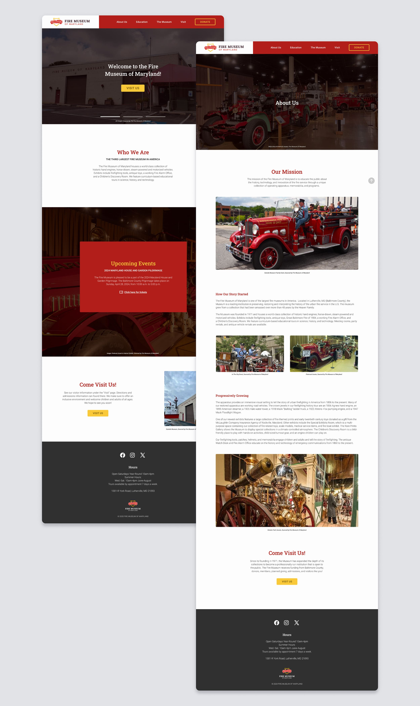
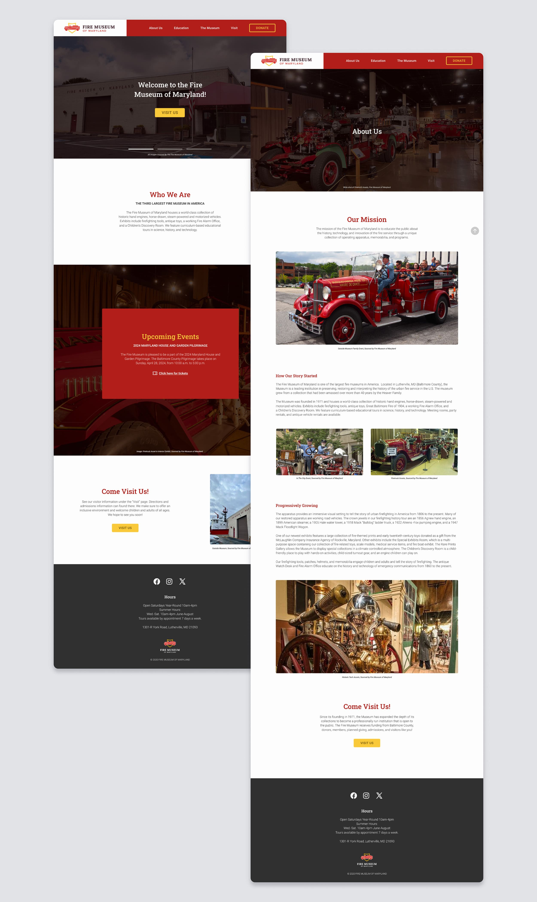

Non-profit Rebrand
BRAND IDENTITY PROJECT

Logo Redesign
Web Redesign
Millenials
Children
Illustrator
Figma
OVERVIEW
Redesigning the Fire Museum of Maryland
The Fire Museum of Maryland is a non-profit institution located in Lutherville, Maryland. Originally founded in 1971, it is now home to a world-class collection of historic hand engines and fire apparatus. To help grab the attention of the museum’s target audience, younger children as well as older adults, a redesigned identity was created to capture the essence of the museum. They sought a rebrand that honored their mission: To educate the public on the history, technology, and innovation of the U.S. fire service.
DISCOVERY
Identifying areas of opportunity
After visiting the museum and conducting interviews with staff and visitors, the main insight was that the museum's current branding lacked focus on the collections that attracted visitors the most: Their firetrucks. It also lacked visual appeal for target audiences. With issues in legibility, color contrast, and visual hierarchy, it was difficult for both older audiences and children to engage.
BRAND DELIVERABLES
The final assets
The new assets for the museum were designed with the primary goal of meeting audience needs and providing visuals that best suited the reputable museum. The redesign aimed to ensure a sophisticated and honorable look while also providing a user-friendly experience.
 
